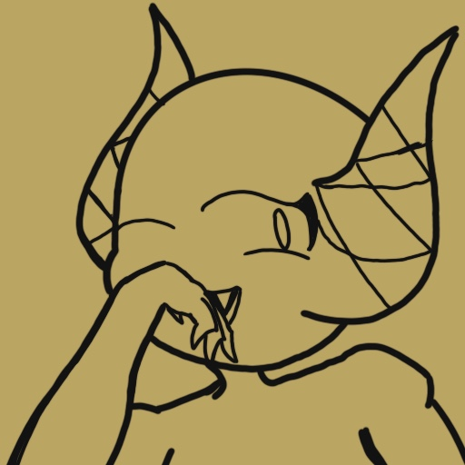
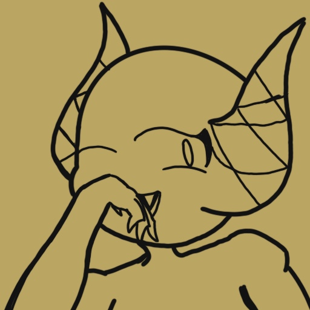

Adoptive brother of Sickle, Blink has weirdly been able to surpass everything I throw at him. Blink is a Astroin, specifically of the demon variant, with that knowledge, they are reality benders, and considered to be "The Astroins of the stars", these type of Astroins are very technical due to their weird yet powerful abilities, stemming from simple stars that allows them to warp from different parts from the world, other dimensions and multiverses, to being able to change reality and whatever they can obtain, to their own wants and desires. This Demon Astroin seems to be more selfless than the others before the Eptic war, yet I sadly have no other choice but to Kill Him
They're quick, and they move like water, from what I've got, Kai is Blink's childhood best friend, she's also a Astroin called Oracs, they worked in Architecture, with enough practice their water can be as strong as diamonds, this Orca specifically has reached a point to where her water is worn like a sash, yet her water isn't strong enough to make sturctures.
Born a Slime monster, chose to be demon. Pink is a shapeshifter due to her nature, born a slime and abandoned by her family, and was picked up by the king of the land down below, eventually she became the Princess of hell, and became a chief of her own group of hell hounds and imps, protecting them at whatever cause, after a while she went to earth to explore more on who she was, and met Blink, where they eventually got together, If she's dead, then i can make it easier to kill him off..
Not sure who this is, but what I know is that the other 3 gets insight from this person, and they're a tech savy type of person
Ready to go back?
Last page: Goals